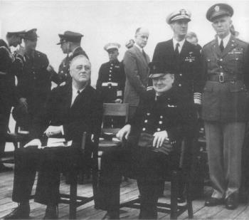

Franklin Delano Roosevelt ve Winston Churchill
Atlantik Bildirisi Toplantısı’nda, Ağustos 1941
Kamuoyu yoklamalarıyla yöneltilen çağdaş politik liderler için, Roosevelt’in yalnızlık politikasını benimseyen halkını bir savaşa katılmaya ikna etmekteki rolü, bir demokraside liderliğin etkisi hakkında bir ders vermektedir. Eninde sonunda Avrupa güç dengesine yöneltilen tehdide son vermek ve Almanya’nın dünya hegemonyası amacına ulaşmasına engel olmak için Amerika’nın müdahalesi gerekecekti. Amerika’nın büyüyen gücünün, onu bir gün uluslararası arenaya iteceği esasen beklenen bir şeydi. Bu işin bu kadar hızlı ve kesin olmasını sağlamak ise, Franklin Delano Roosevelt’in başarısıdır.
Bütün büyük liderler yollarında yalnız yürürler. Yalnızlıkları, çağdaşlarının görmediği sorunları zamanında farkına varma yeteneklerinden ileri gelmektedir. Roosevelt, yalnızlık politikasını benimseyen halkını, aralarındaki anlaşmazlıklar, daha birkaç yıl önce Amerikan güvenliğini ilgilendirmeyen ve Amerikan değerlerine uygun düşmeyen ülkeler olarak görülen ülkeler arasındaki bir savaşa soktu. 1940’tan sonra, Roosevelt, daha birkaç yıl önce büyük bir çoğunlukla bir dizi tarafsızlık yasası çıkaran Kongre’yi, Büyük Britanya’ya devamlı olarak artan bir şekilde Amerikan yardımı yapılması yetkisini vermeye ikna etti ki, bu yardım, açıkça savaşan durumundan, bir adım geride ve bazen de bu sınırı geçen nitelikteydi. Son olarak, Japonya’nın Pearl Harbor’a saldırısı Amerika’nın son tereddütlerini de ortadan kaldırdı. Roosevelt, kendisinin dokunulamaz olduğu görüşünü iki yüzyıldır bir hazine gibi koruyan bir toplumu, bir Mihver Devletleri zaferinin korkunç tehlikelerine inandırmayı başardı. Bu kez, Amerikan müdahalesinin, devamlı uluslararası bağlantıların ilk adımı olmasını da sağladı. Savaş esnasında Roosevelt’in liderliği, ittifakı bir arada tuttu ve bugüne kadar uluslararası topluma hizmet etmeye devam eden çokuluslu kurumları şekillendirdi.
Belki Abraham Lincoln hariç, hiçbir başkan Amerikan tarihinde bu kadar kesin bir değişiklik yapamamıştır. Roosevelt yemin ederek işe başladığı zaman ulusal bir kararsızlık devri yaşanıyordu; Amerikalıların, Yeni Dünya’nın sonsuz gelişme yeteneğine duyduğu inanç, Büyük Ekonomik Depresyon’la sarsılmıştı. Etrafındaki demokrasiler aksıyordu ve Sağ’da Sol’da antidemokratik hükümetler çoğalıyordu.
Roosevelt içeride ümidi yerleştirdikten sonra, kader ona dünyada demokrasiyi savunma görevini de vermişti. Kimse, Roosevelt’in bu konuda yaptıklarını Isaiah Berlin kadar iyi anlatamamıştır:
“(Roosevelt) geleceğe sakin bir gözle bakıyordu; sanki şöyle diyor gibiydi: Gelsin, ne olursa olsun sonuçta hepsi bizim büyük değirmenimizin öğüteceği un olacaktır. Hepsini, yararlı hale getireceğiz! Ümidini kaybetmiş dünya, bir tarafta kötü karakterli ve öldürücü derecede etkili olan ve her şeyi mahvetmeğe hazır fanatikler, öbür tarafta kaçışan korkmuş insanlar, amacını tanımlayamayan ve şevkten yoksun vatanperverler olarak ikiye ayrılmıştı. Roosevelt, kontrol elinde olduğu müddetçe, bu müthiş akıma göğüs germe yeteneğine inandı. Diktatörlerin karakterlerine, enerjilerine ve becerilerine sahipti ve bizim tarafımızdaydı.”{452}
Roosevelt, Wilson yönetiminde deniz kuvvetleri bakan yardımcılığı görevinde bulunmuş ve 1920 seçimlerinde Demokratların başkan yardımcısı adayı olmuştu. De Gaulle, Churchill ve Adenauer gibi birçok lider, kamu hayatından çekildikten sonraki devrede yalnızlıkla uzlaşmak durumunda kalmışlardı. Roosevelt, 1921’de çocuk felcine yakalandığı zaman yalnızlıkla karşılaştı. Çok büyük bir irade gücü göstererek sakatlığını yendi ve kol değneklerinin yardımıyla ayakta durmayı, hatta bir iki adım atmayı öğrendi. Bu hareketi, onun sanki felçli değilmiş gibi halkın karşısına çıkmasını sağlıyordu. 1945’teki Yalta Konferansı’na kadar, nutuklarını hep ayakta durarak söylerdi: Medya da Roosevelt’in çabalarına katkıda bulunarak onun rolünü vakarla oynamasına yardımcı olduğundan Amerikan halkının büyük çoğunluğu onun sakatlığının derecesini fark edemedi veya algılanması acımayla karışmadı.
Kendi farklı konumunu korumak için çekiciliğini kullanan coşkulu bir lider olan Roosevelt’in, politik bir yönetici ve hayalperest karışımı bir kişiliği vardı. Çoğu zaman ülkeyi analizlerden esinlenerek değil, içgüdülerine göre yönetti ve birbirinin zıttı kuvvetli duygular uyandırdı.{453} İsaiah Berlin tarafından özetlendiği üzere, Roosevelt’in ciddi karakter kusurları vardı ve bunlar ilkesizliği, vicdansızlığı ve alaycılığı da içeriyordu. Yine de Berlin, sonuçta Roosevelt’in olumlu özelliklerinin dramatik şekilde daha ağır bastığını söylüyor:
“Onu izleyenleri çeken şey, ender görülen ve ilham veren özellikleriydi: iyi kalpliydi ve geniş bir politik ufka, hayal gücüne ve içinde yaşadığı zamanı ve XX. yüzyılda işleyen büyük yeni güçlerin yönünü anlama yeteneğine sahipti...”{454}
Amerika’yı uluslararası liderlik rolüne götüren başkandı; bütün dünyada savaş veya barış, ilerleme veya yerinde sayma onun vizyonuna ve kararına bağlıydı.
Amerika’nın Birinci Dünya Savaşı’na karışmadan ikincisine aktif olarak katılmaya gidişi uzun ve zor bir süreç oldu. Bunun nedeni, Amerikan ulusunun, tekrar yalnızlık politikasına dönmüş olmasıdır. Amerikan halkının, uluslararası işlere karşı duyduğu nefretin derinliği de Roosevelt’in başarısının büyüklüğünü daha iyi göstermektedir. Roosevelt’in politikalarını yürüttüğü geçmiş tarihe kısa bir bakış bu bakımdan gereklidir.
1920’lerde Amerika’nın tavrı kararsızdı; evrensel olarak uygulanabilir prensiplerini ortaya koymak isteği ile bu prensipleri yalnızcı dış politika yönünde doğrulama gereksinimi arasında saat sarkacı gibi gidip geliyordu. Amerikalılar, dış politikalarının geleneksel temalarını daha fazla vurguyla tekrarlamaya başladılar: Özgürlüğün uygulayıcısı olarak Amerikan misyonunun tek olması, demokratik dış politikanın moral üstünlüğü; kişisel ve uluslararası ahlak arasındaki kesin ilişki; açık diplomasinin önemi ve güç dengesinin yerine Milletler Cemiyeti’nde ifade edildiği şekliyle uluslararası konsensüsün geçmesi.
Bütün bu evrensel ilkeler, Amerikan yalnızlık politikasını savunmak için sayılmıştır. Amerikalılar, hâlâ Batı yarımküresi dışında olan herhangi bir şeyin kendi güvenliklerini etkileyebileceğine inanma yeteneğine sahip değillerdi. 1920 ve 1930’ların Amerika’sı, uzak, savaşan toplumların çatışmalarına katılmayı zorunlu kıldığından, kendi ortak güvenlik doktrinini reddetmişti. Versay Antlaşması’nın hükümleri intikamcı ve tazminatlar da kendine zarar verici nitelikte değerlendirilmişti. Fransızlar Ruhr’u işgal ettikleri zaman, Amerikalılar Ren bölgesinde kalan işgal kuvvetlerini geri çekmek için bunu fırsat bildi. Amerika’nın farklılığına olan Wilsoncu inanç, hiçbir uluslararası düzeninin gerçekleştiremeyeceği bir kriter getirdiğinden, hayal kırıklığı da bu düzenin doğasının bir parçası haline geldi.
Savaş sonuçlarının yarattığı düş kırıklığı, enternasyonalizm taraftarları ile yalnızcılık politikası taraftarları arasındaki farkı oldukça törpüledi. En liberal enternasyonalizm taraftarları bile, kusurlu savaş sonrası düzenlemesinin korunmasında Amerika’nın bir çıkan olmadığını fark etmişlerdi. Hiçbir önemli grup, güç dengesi hakkında söylenebilecek iyi bir söz bulamıyordu. Enternasyonalizm diye adlandırılan şey, uluslararası günlük diplomasiye katılmaktan çok, Milletler Cemiyeti üyeliği olarak tanımlanıyordu. En koyu enternasyonalizm taraftarları bile, Monroe Doktrini’nin Milletler Cemiyeti’nin yerine geçtiğini ileri sürdüler ve Amerika’nın, ekonomik olanlar dâhil, yaptırımlara katılması düşüncesinden kaçındılar.
Yalnızlık politikası taraftarları, bu tutumlarını mantıklı sonuçlarına kadar götürdüler. Milletler Cemiyeti’ne, Amerikan dış politikasının iki direği olan Monroe Doktrini’ni ve yalnızcılık politikasını tehlikeye soktuğu için saldırdılar. Cemiyetin Monroe Doktrini’ne aykırı olduğuna inanılıyordu, çünkü ortak güvenlik cemiyete Batı yarımküresi içindeki anlaşmazlıklara müdahale hakkı tanıyor, hatta bunu gerektiriyordu. Cemiyet, yalnızcılık politikasına da aykırıydı; çünkü Amerika’ya Batı yarımküresi dışındaki anlaşmazlıklara da karışmak zorunluluğu getiriyordu.
Yalnızlık politikası taraftarları bu tutumların, nihai kararlarına kadar korudular. Bütün Batı yarımküresi, bir şekilde ortak güvenliğin işleme alanı dışında tutulursa, diğer dünya uluslarının da kendi bölgesel gruplarını kurmalarına ve onları cemiyetin alanı dışında tutmalarına kim engel olacaktı? Bu durumda, Milletler Cemiyeti, bölgesel olmakla beraber, yeniden güç dengesi sistemini canlandırmış olacaktı. Pratikte, enternasyonalizm ve yalnızlık politikası taraftarları, aynı dış politikada birleşiyorlardı. Her iki taraf da Batı yarımküresinde yabancı müdahaleye ve cemiyetin bu alan dışında zorlama mekanizmasına katılmaya karşıydılar. Silahsızlanma konferansını destekliyorlardı çünkü savaşa, silahların neden olduğu ve silahların azaltılmasının barışa yardımcı olacağı noktasında açık bir uzlaşma vardı. Briand-Kellogg Paktı gibi, zorlama öğesini içermeyen, uluslararası kabul görmüş genel barışçı çözüm ilkelerine taraftardılar. Son olarak, Birleşik Devletler, derhal politik sonuç doğurmayacak ve üzerinde uyuşma sağlanmış olan tazminat ödeme planları hazırlamak gibi teknik ve genellikle mali konularda yardım yapmaya her zaman hazırdı.
Amerikan düşüncesindeki bir ilkeyi onaylamakla, onun uygulanmasının zorlanmasına katılma arasındaki boşluk, 1921-22 Washington Deniz Konferansı’ndan sonra dramatik bir şekilde belirgin hale geldi. Konferans, iki yönden önemliydi: Birincisi, deniz silahlanmasında Birleşik Devletler’e, Büyük Britanya’ya ve Japonya’ya bir tavan getiriyordu. Birleşik Devletler’in deniz gücü, Büyük Britanya’nın deniz gücü kadar olabilecekti; Japonya’nınki ise, Birleşik Devletler’in deniz gücünün beşte üçünü geçemeyecekti. Bu hüküm, Pasifik’te Japonya’nın yanında Amerika’nın egemen bir güç olarak rolünü doğruluyordu. Bu bölgede Büyük Britanya’nın rolü ikinci derecedeydi. Daha önemlisi, Japonya, Birleşik Devletler, Büyük Britanya ve Fransa’dan oluşan ve Dörtlü Antlaşma denilen anlaşmazlıkların barışçı yollarla çözümü antlaşması, 1902 İngiliz-Japon İttifakı’nın yerini alacak ve Pasifik’te bir işbirliği dönemi başlatacaktı. Fakat Dörtlü Antlaşma’nın imzacılarından birisi antlaşmanın hükümlerine uymazsa, diğerleri ona karşı harekete geçecekler miydi? “Dörtlü Antlaşma’da savaş yapma zorunluluğu getiren hükümler yoktur... Silahlı güç, ittifak veya savunmaya katılmak için yazılı veya moral hiçbir yükümlülük yoktur...” Başkan Harding, şüpheci Amerikan Senatosu’na bu kelimelerle açıklıyordu antlaşmayı.{455}
Dışişleri Bakanı Charles Evans Hughes, Amerika’nın, şartları ne olursa olsun antlaşmanın uygulanması için alınacak önlemlere katılmayacağını bütün imzacılara ayrıca bildirerek Başkan’ın sözlerini kuvvetlendirdi. Fakat Senato hâlâ tatmin olmamıştı. Dörtlü Antlaşmayı onaylarken, bu antlaşmanın Birleşik Devletler’i saldırıya karşı koymak için silah kullanma konusunda hiçbir şekilde bağlamadığını açıkça belirten çekinceler koydu.{456} Başka bir deyişle, antlaşma kendi erdemine terk edilmişti; uymamanın herhangi bir sonucu yoktu. Amerika, sanki bir antlaşma yokmuş gibi, her olay çıktığında konuyu karara bağlayacaktı.
Diplomasinin yüzyıllardan beri rutin olarak kullandığı terminoloji çerçevesinde, ciddi bir antlaşmanın yaptırım hakkı içermediği ve yaptırımın her seferinde Kongre’de olay bazında görüşüleceği önerisi olağandışı bir şeydi. Bu durum, 1973 Ocak ayında imzalanan Vietnam Barış Antlaşması dolayısıyla Nixon yönetimi ile Kongre arasındaki görüşmelerin habercisi gibi idi. Bu görüşmelerde Kongre, Amerika’nın her iki partiden üç yönetimi boyunca devam eden savaş için yapılan bir anlaşmanın, uygulama ile ilgili herhangi bir hak getirmediğini ileri sürdü. Bu teoriye göre, Amerika ile yapılan anlaşmalar Washington’un o andaki ruh halini yansıtır; bu anlaşmalardan ne sonuçlar çıkacağı yine Washington’un başka bir zamandaki ruh haline bağlıdır ki, bu tavrın Amerika’nın yükümlülüklerine karşı güveni artıracak bir tavır olmadığı açıktır.
Senato’nun koyduğu çekince, Başkan Harding’in Dörtlü Antlaşma’ya duyduğu ilgiyi azaltmadı. Başkan, Filipinler’i koruması nedeniyle ve “beşeri gelişmede yeni ve daha iyi bir çağın başlangıcının işareti olduğu” gerekçesiyle imza töreninde antlaşmayı övdü. Uygulama hükmü içermeyen bir antlaşmanın, Filipinler gibi büyük bir ödülü koruması nasıl mümkün olacaktı? Politik yelpazenin karşı ucunda olmasına karşın, Harding, standart Wilson mesajını veriyordu. Dünya, bu antlaşmayı çiğneyenleri “aldatma veya alçaklığın iğrençliğini”{457} ilan ederek cezalandıracaktı. Bununla beraber Harding, Amerika, Milletler Cemiyeti’ne girmeyi reddettiği sürece dünya kamuoyunun bu konuda nasıl karar vereceğini açıklamadı.
Onbirinci bölümde, Avrupa üzerindeki etkisi tartışılan Briand-Kellogg Paktı, Amerika’nın, ilkelerin kendi kendine uygulanacağını düşünme eğilimini sergileyen başka bir örnektir. Amerikan liderleri, altmış iki devletin ulusal politikanın bir aracı olarak savaşı reddetmeleri dolayısıyla antlaşmanın tarihi niteliğini ilan ettilerse de, uygulanmasını zorlamak bir yana, bir uygulama mekanizması kabul edilmesine bile razı olmadılar. Aralık 1928’de, Kongre karşısında Başkan Calvin Coolidge heyecanla şunu belirtti: “Bu antlaşmaya uymak... şimdiye kadar uluslar arasında yapılmış herhangi bir anlaşmadan daha çok dünya barışı vaat etmektedir”.{458}
Ama bu ütopya nasıl gerçekleştirilecekti? Coolidge’nin Briand-Kellogg Paktı’nı heyecanla savunması, enternasyonalistleri ve Milletler Cemiyeti taraftarlarını kışkırttı ve haklı olarak, savaş hukuk dışı ilan edildiğine göre tarafsızlık kavramının büsbütün anlamını yitirdiğini ileri sürdüler. Buna göre, mademki Milletler Cemiyeti saldırganı belirlemek için kurulmuştu, o halde uluslararası toplum onları hak ettikleri şekilde cezalandırmak zorundaydı. Bu görüşün taraftarlarından biri şöyle soruyordu: “Mussolini’nin saldırgan niyetlerinin, yalnızca İtalyan halkının iyi niyeti ve kamuoyunun gücü ile kontrol altında tutulabileceğine inanan kimse var mı?”{459}
Bu sorunun cevabının önceden bilinmesi, cevabın kabul edilebilirliğini arttırmadı. Adını taşıyan antlaşma daha tartışılırken, Dışişleri Bakanı Kellogg, Dışilişkiler Komisyonu önünde yaptığı bir konuşmada, anlaşmaya uymayı sağlamak için hiçbir zaman kuvvet kullanılmayacağım vurgulamıştı. Kuvvete dayanmanın, barışa doğru attığımız adımları ortadan kaldırmak ihtiyacında olduğumuz bir nevi askeri ittifaka dönüştüreceğini söyledi. Paktta saldırının bir tanımı da olmamalıydı; çünkü her tanımın yine de bir eksiği olacaktı ve paktın üslubunu bozacaktı.{460} Kellogg için üslup yalnızca başlangıç değil, aynı zamanda bir hedefti:
“Meşru savunma içinde hareket ettiğini ileri süren bir devlet, antlaşmanın imzacıları önünde olduğu kadar, dünya kamuoyu önünde de haklı olduğunu kanıtlamalıdır. Bu nedenle antlaşmaya, saldırganın veya meşru savunmanın tanımını koymayı reddettim; çünkü şuna inanıyordum ki, her şeyi kapsayan hukuki bir tanımlama önceden yapılamaz... Bunu yapmak, saldırgan devletin kendisinin masum olduğunu kanıtlamasını kolaylaştırmaz, tersine zorlaştırır.”{461}
Senato, Kellogg’un açıklamalarından altı yıl önce, Harding’in Dörtlü Antlaşma’nın niçin yazılan şeyi kastetmediğini açıklayan yorumundan etkilendiğinden daha fazla etkilenmedi. Senato antlaşmaya kendine ait üç “anlayış” ekledi: Senato’nun görüşüne göre, antlaşma ne meşru savunma hakkını, ne de Monroe Doktrini’ni sınırlamakta, saldırı kurbanlarına yardım etme yükümlülüğü de yaratmamaktadır. Bu demekti ki, her öngörülebilen çatışma, antlaşmanın kapsamı dışında tutulmuştu. Senato, Briand-Kellogg Paktı’nı bir prensip açıklaması olarak onaylarken, pratikte etkileri olmadığında ısrar etti. Bu tutum şöyle bir soruya da neden oldu: Amerika’yı bir niyet açıklamasına katmak, kaçınılmaz olarak ortaya çıkardığı çekincelere değer miydi?
Birleşik Devletler, ittifakları reddeder ve Milletler Cemiyeti’nin etkinliği hakkında kuşkular yaratırsa, Versay sistemi nasıl korunacaktı? Kellogg’un cevabı, kendisini eleştirenlerinkinden daha da az orijinaldi ve bu da yine kamuoyunun gücü denen eski dosttu:
“Bu antlaşma ile, bütün devletler, ciddi olarak uluslararası anlaşmazlıkların çözümünde savaşın bir kurum olarak kullanılmasını reddederlerse, dünya bir adım daha ileri gidecek, bir kamuoyu yaratacak, antlaşmaya uymak için büyük moral güçleri bir araya toplayacak ve dünyayı bir başka büyük çatışmaya sokmayı daha zor hale getirecek kutsal bir yükümlülük altına girecektir.”{462}
Dört yıl sonra, Kellogg’un yerine geçen Amerika’nın iki savaş arasında yetiştirdiği seçkin ve kültürlü devlet adamı Henry Stimson, saldırıya karşı Briand-Kellogg Paktı’ndan daha iyi bir çare ortaya koyamadı. Kuşkusuz o da kamuoyu gücünden destek alacaktı:
“Briand-Kellogg Paktı, kuvvet kullanılan yaptırımlar içermemektedir... Onun yerine, kamuoyu yaptırımına dayanmaktadır ki, bu dünyanın en güçlü yaptırımından biri olabilir... Onunla alay edenler, Büyük Savaş’tan sonra dünya düşüncesindeki gelişmeyi doğru olarak takdir edemeyenlerdir.”{463}
Avrupa ve Asya’yla karşılaştırıldığı zamanki konumu, uzak bir ada olan Birleşik Devletler için, Avrupa’nın anlaşmazlıkları, anlaşılması güç ve kendilerini ilgilendirmeyen şeylerdi. Amerika, kendi güvenliğini etkilemeden Avrupa ülkelerini tehdit eden sorunlardan soyutlanmasını sağlayan geniş bir güvenlik mesafesine sahip olduğundan, gerçekte Avrupa ülkeleri, Amerika’nın emniyet supapları görevini görüyorlardı. Aynı mantık, “şahane yalnızlık” döneminde İngiltere’nin günlük Avrupa politikalarından uzak yaşamasını sağlamıştı.
Ancak Büyük Britanya’nın XIX. yüzyıldaki “şahane yalnızlığı” ile Amerika’nın XX. yüzyıldaki yalnızlık politikası arasında temel bir fark vardır. Büyük Britanya, Avrupa’nın günlük kavgalarından uzak kalmaya çalışmıştır. Ancak kendi güvenliğinin güç dengesine dayandığını anlamış ve Avrupa diplomasisinin geleneksel metotlarını kullanarak güç dengesini savunmaya her zaman hazır olmuştur. Bunun aksine, Amerika, hiçbir zaman kuvvet dengesinin ve Avrupa tarzı diplomasinin önemini kabul etmemiştir. Tanrı’nın lütfuyla benzeri olmayan ve nihai olarak üstün bir konuma sahip olduğuna inanan Amerika, açıkça uluslararası uygulamalarla ilgilenmedi ve ilgilendiği zaman da bunu yalnızca genel amaçlar için ve kendi özel diplomasi tarzına uygun olarak yaptı. Bu tarz, Avrupa’nınkinden daha geniş bir şekilde halka dönük, daha hukuki ve daha ideolojikti.
Dolayısıyla, iki savaş arası dönemde Avrupa ve Amerikan tarzı diplomasilerin birbirine etkisi, her ikisinin en kötü yanlarının birleşimi olmuştur. Kendilerinin tehdit edildiğini hisseden Avrupa ülkeleri, özellikle Fransa ve Doğu Avrupa’nın yeni devletleri, Amerika’nın ortak güvenlik sistemini ve uluslararası hakemliği veya savaş ve barışın hukuki tanımımı kabul etmemişlerdir. Başta Büyük Britanya olmak üzere, Amerika’nın gündemini kabul eden devletler de, politikalarını bu baz üzerinden yönetme deneyimine sahip değildiler. Bununla beraber, bütün bu devletlerin hepsi şunu da çok iyi biliyorlardı ki, Amerikan yardımı olmadan Almanya yenilemezdi. Savaş sona erdiğinden beri, güç dengesi, savaş zamanı müttefikleri için daha da az elverişli duruma gelmişti. Almanya ile yeni bir savaşta, özellikle Sovyetler Birliği’nin de artık sahnede olmaması dolayısıyla, Amerikan yardımına daha acele ve daha büyük ve olasılıkla geçen seferkinden daha erken ihtiyaç olacaktı.
Korku ve umudun karışımının pratik sonucu, Avrupa diplomasisinin, geleneksel olarak demirlediği yerden gittikçe uzaklara sürüklenmesi ve bu sürüklenmenin, duygusal olarak daha çok bağlanılan Amerika’ya doğru olmasıdır. Bu durum çifte veto yaratıyordu. Fransa, Büyük Britanya olmadan hiçbir şey yapamaz ve Büyük Britanya da, Washington tarafından kuvvetle savunulan görüşlere aykırı hareket edemezdi. Amerikan liderlerinin, hangi şartlar altında olursa olsun, Avrupa sorunları dolayısıyla savaş riskini hiçbir şekilde göze alamayacaklarına dair tükenmek bilmeyen konuşmalarına rağmen, bu böyleydi.
Amerika’nın 1920’li yıllar boyunca Versay sistemini savunma yükümlülüğünü devamlı olarak reddetmesi, uluslararası gerginliğin birdenbire patladığı 1930’lu yıllar için korkunç bir psikolojik hazırlık yarattı, ilerideki yıllarda olacakların korkusu, 1931 yılında, Japonya Mançurya’yı istila edip, Çin’den ayırdığı ve bir uydu devlet yaptığı zaman ortaya çıktı. Birleşik Devletler, Japonya’nın hareketini kınadı; fakat yaptırımlara katılmayı reddetti. Amerika, Japonya’yı suçlarken kendisine özgü bir yaptırım getirdi. O zaman bu görevden kaçış gibi göründü ise de, on yıl sonra bu yaptırım Roosevelt’in elinde Japonya ile hesaplaşmak için bir silaha dönüştü. Bu yaptırım, kuvvet kullanılarak yapılan toprak değişikliklerinin tanınmaması politikasıydı. 1932’de Stimson ile başlatılan bu politika, 1941 yılının sonbaharında Roosevelt tarafından hayata geçirilerek, Japonya’dan, Mançurya ve işgal ettiği diğer yerlerden çekilmesi istendi.
Dünya krizi, 30 Ocak 1933’te Hitler’in Alman Şansölyesi konumuna gelişi ile gerçekten başladı. Tarihin şu cilvesine bakın ki, Hitler’i yere sermek için çalışan Franklin Delano Roosevelt de, bu tarihten bir aydan biraz fazla olan bir zaman sonra yemin ederek göreve başladı. Ancak Roosevelt’in ilk iktidar döneminde hiçbir şey böyle bir sonuca işaret etmiyordu. Roosevelt, iki savaş arası dönemin beylik nutuklarını söylemekten ve eski başkanlar tarafından bırakılan yalnızlık politikasının temalarını tekrar etmekten çok seyrek ayrıldı. 20 Aralık 1933’te Woodrow Wilson Vakfı’nda yaptığı bir konuşmada, Roosevelt 1920’lerin Deniz Antlaşmalarının süresinin bitimine yakında gelineceğinden bahsetti ve bu antlaşmaların uzatılmasını, bütün saldırı silahlarının kaldırılmasını ve Kellogg’a geri dönerek hiçbir ülkenin, diğer bir ülkenin topraklarına girmemesi yükümlülüğünü kabul etmesini önerdi.
Konu, önerdiklerinin olası ihlallerine karşı, Roosevelt’in önerdiği çözüm kadar bilinen bir konuydu. Bir kez daha, kamuoyunun kınaması, mevcut tek çare olarak önerildi:
“İstisnasız her devlet ciddi bir yükümlülük ile böyle bir anlaşmaya girmediği sürece, saldırının veya saldırı savaşı silahlarının ortadan kaldırılması hakkındaki genel bir anlaşma hiçbir değer ifade etmez... (O halde) dostlarım, koyunları keçilerden ayırmak daha kolaydır... Bizim için yapılacak şey, bu yeni kuşağa, bu andan itibaren, hükümetler tarafından yapılan savaşların yerine halklar tarafından yapılan barışın gelmesini önermek şeklinde Woodrow Wilson’un meydan okumasını devam ettirmekten başka bir şey değildir.”{464}
Koyunlardan ayrıldıktan sonra keçilerin başına ne geleceği konusundan ise hiç bahis yoktu.
Roosevelt’in önerisi, ileri sürüldüğü zaman gerçekleşmesi tamamen olanaksız bir öneriydi. Çünkü Hitler, Silahsızlanma Konferansı’nı iki ay önce terk etmiş ve geri dönmeyi de reddetmişti. Ne olursa olsun, saldırı silahlarını yasaklamak, Hitler’in gündeminde yoktu. Aynı zamanda Hitler, yeniden silahlanmayı seçmesi nedeniyle global bir ayıplamayla da karşılaşmadı.
Roosevelt’in ilk iktidar dönemi, Birinci Dünya Savaşı üzerindeki revizyonizmin en kuvvetli olduğu döneme rastlar. 1935’te Kuzey Dakota Senatörü Gerald Nye başkanlığında kurulan özel Senato Komisyonu, yayınladığı 1400 sayfalık raporda, Amerika’nın savaşa girmesinin suçunu silah üreticilerine yükledi. Hemen ardından çıkan Walter Millis’in The Road to War (Savaşa Giden Yol) adlı kitabı bu tezi yaygınlaştırdı.{465} Bu düşünce ekolünün etkisi altında, Amerika’nın savaşa katılması, önemli veya daimi çıkarlarının ihlali, kötülük ve fesatlık olarak nitelendirildi.
Amerika’nın kandırılarak tekrar savaşa sokulmasını önlemek için, 1935-1937 arasında Kongre Tarafsızlık Yasaları denilen üç yasayı kabul etti. Nye Raporu’ndan esinlenen bu yasalar, savaşın sebebi ne olursa olsun, savaşanlara kredi veya başka herhangi bir şekilde mali yardım yapılmasını yasaklamakta ve kimin kurban olduğuna bakılmaksızın taraflara silah ambargosu konulmasını öngörmekteydi. Peşin para ile satın alınan askeri olmayan ticari eşyanın verilmesine ise, ancak Amerikan olmayan gemilerle taşınması koşuluyla izin verilmekteydi.{466} Kongre riski reddetmekle beraber, ticari çıkarlara engel çıkarmak da istemiyordu. Saldırganlar Avrupa’yı ezerken, Amerika yasayla hepsine tek bir sınırlamalar dizisi getirerek saldırganla kurban arasındaki farkı ortadan kaldırdı.
Ulusal çıkar, jeostratejik terimlerden çok hukuki terimlerle tanımlanmaya başladı. 1936 yılının Mart’ında, Dışişleri Bakanı Hull, Avrupa askeri dengesini altüst eden ve Doğu Avrupa ülkelerini savunmasız bırakan Ren bölgesinin tekrar askerleştirilmesinin önemini Roosevelt’e tamamen hukuki terimlerle anlattı:
“Bu kısa analiz gösteriyor ki, Alman hükümetinin hareketi, hem Versay, hem de Locarno paktlarını ihlal etmektedir; fakat Birleşik Devletler’i ilgilendirdiği kadarıyla, Almanya ile yapılan 25Ağustos 1921 tarihli anlaşmamızın{467} ihlal edilmesi söz konusu değildir...”{468}
1936 büyük seçim zaferinden sonra, Roosevelt mevcut çerçeveden yavaş yavaş çıktı. Gerçekte, her ne kadar ekonomik depresyonla çok uğraştı ise de, Roosevelt, Churchill hariç, herhangi bir Avrupa liderinden daha çok diktatörlerin meydan okumalarının özünü kavradığını gösterdi, ilk önce, sadece Amerika’nın demokrasilerin davasına moral yönden bağlılığını ilan etti. Roosevelt, bu eğitim sürecine 5 Ekim 1937’de Chicago’da yaptığı Karantina Konuşması olarak anılan konuşma ile başladı. Bu konuşma, onun Amerika’ya yaklaşan tehlikeyle ilgili olarak ilk uyarışıydı ve bu konuda Amerika’nın bazı sorumluluklar üstlenebileceği yönündeki ilk resmi açıklamasıydı. Japonya’nın Çin’deki tekrarlanan askeri saldırısının, bir önceki yıl Berlin-Roma ekseninin açıklanması ile birleşmesi de Roosevelt’in endişelerinin küresel bir boyut kazanmasına zemin hazırladı:
“Dünya halkının %10’u, %90’ının barış, özgürlük ve güvenliğini, bütün uluslararası hukuku ve düzeni bozmakla tehdit ederek tehlikeye sokmaktadır... Üzülerek söylüyorum ki, dünyada yasa tanımazlığın bir bulaşıcı hastalık gibi yayıldığı doğrudur. Bir bulaşıcı hastalık yayılmaya başladığı zaman, toplum sıhhatini korumak ve yayılmayı durdurmak için hasta olanların karantinaya alınmasını onaylar ve buna katılır.”{469}
Roosevelt, “karantina” ile ne kastettiğini ve eğer varsa aklından bu konuda ne gibi önlemler geçtiğini açıklamayacak kadar dikkatliydi. Konuşma, herhangi bir hareketi, üstü kapalı olarak söyleseydi, bu durum Kongre’nin büyük bir çoğunlukla kabul ettiği ve Başkan’ın yeni imzaladığı Tarafsızlık Yasaları ile bağdaşmazdı.
Karantina Konuşması’nın, Başkan’ın niyetlerinin açıklığa kavuşturulmasını isteyen yalnızlık politikası taraftarlarınca saldırıya uğraması sürpriz olmadı. Ateşli bir şekilde, “barışsever” uluslar ile “savaşçı” uluslar arasında ayrım yapılmasının, bir Amerikan değer yargısı anlamına geldiğini ve bunun da müdahale etmeme politikasının terk edilmesine gidebileceğini, Roosevelt’in ve Kongre’nin ise bu politikaya bağlılık yükümlülüğü altında olduklarını ileri sürdüler, iki yıl sonra, Roosevelt konuşmanın sebep olduğu gürültünün nedenini şöyle açıklıyordu:
“Ne yazık ki bu öneri sağır, hatta düşman ve kızgınlık içinde olan kulaklara düştü... Savaş kışkırtıcılığı olarak tanıtıldı; dışişlerine müdahale girişimi olarak kınandı; hatta, olmayan savaş tehlikesini ‘yatak altında’ aramak gibi bir sinirlilik göstergesi olduğu biçiminde gülünç duruma düşürüldü.”{470}
Roosevelt tartışmayı, kendisine atfedilen niyetleri inkâr etmekle sonuçlandırabilirdi. Ancak şiddetli eleştiri saldırısına karşın, bir basın toplantısında Roosevelt bir çeşit ortak savunma seçeneğini açık tutmak için belirsiz bir şekilde konuştu. O zamanın gazetecilik uygulamasına göre, Başkan sık sık basınla “Off-the-record” (yazılmamak koşuluyla) bir araya gelirdi ve Başkan’ın isminin geçmemesi ve kendisinden alıntı yapılmaması koşuluna uyulurdu.
Yıllar sonra, tarihçi Charles Beard bu toplantılarla ilgili bir notu yayınladı. Bu notta görüldüğü üzere, Roosevelt sorular karşısında kaçamak cevaplar veriyor, zikzaklar çiziyor, fakat hiçbir zaman Karantina Konuşması’nı inkâr etmiyordu; ancak yeni yaklaşımın ne olduğunu açıklamaktan da kaçınıyordu.{471} Roosevelt, konuşmasının saldırıyı ahlaken kınamanın ötesinde bir harekete işaret ettiğini ısrarla söylüyordu: “Dünyada henüz denenmemiş birçok metot vardır.”{472} Bunun, bir plânı olduğu anlamına mı geldiği kendisine sorulduğu zaman, Roosevelt “Size bir ipucu veremem. Siz bir tane icat etmek zorundasınız. Bir planım var.”{473} Hiçbir zaman bu planın ne olduğunu açıklamadı.
Devlet adamı Roosevelt, yaklaşan tehlikeyi haber verebilirdi; ancak politik lider Roosevelt Amerikan kamuoyunun üç akımı arasında yürümek zorundaydı: Bütün “barışsever” uluslar için açık destek verilmesi taraftarı olan küçük bir grup, böyle bir desteğin işi savaşa kadar götürmeyecek bir şekilde yapılmasından yana olan daha büyük bir grup ve Tarafsızlık Yasaları’nın kendisini ve ruhunu destekleyen büyük çoğunluk. Becerikli bir politik lider, daima mümkün olduğu kadar çok seçeneği açık tutmaya çaba gösterir; nihai yönünü, olayların zoruyla gidilen bir yön değil, kendisinin en iyi tercihi olarak göstermek ister. Hiçbir Amerikan başkanı, bu çeşit bir taktik kullanmakta Roosevelt’ten daha iyi değildi.
Roosevelt, 12 Ekim 1937’de yaptığı ve çoğunlukla iç sorunlar üzerinde durulan Ocakbaşı Sohbeti’nde –Karantina Konuşması’ndan bir hafta sonra– üç grubu da tatmin etmeye çalıştı. Barışa bağlılığını vurgulayan Roosevelt, 1922 Washington Deniz Antlaşması imzacılarının yaklaşan konferansından olumlu bir şekilde bahsederek Amerika’nın buna katılmasını “Çin ve Japonya dâhil, Amerika’nın diğer imzacılarla işbirliği yapmak amacının”{474} bir işareti olarak açıkladı. Uzlaştırıcı bir dille Japonya dâhil herkesle barış içinde yaşama arzusunu belirtirken, Japonya ile işbirliği mümkün olmazsa, bu girişim hiç değilse iyi niyetlerini gösterecekti. Roosevelt, Amerika’nın uluslararası rolü konusunda da aynı derecede belirsizdi. Dinleyicilerine, Deniz Kuvvetleri Bakan Yardımcısı olarak savaş deneyimlerini hatırlattı:
“...1913-1921 yıllarını hatırlıyorum; şahsen dünya olaylarına çok yakındım ve bu dönem içinde, ne yapmak gerektiğini olduğu kadar, ne yapılmaması gerektiğini de iyice öğrenmiş oldum...”{475}
Roosevelt, eğer dinleyicileri, onun bu belirsiz sözlerini, savaş zamanı deneyimlerinin, ona başka işlere bulaşmamanın önemini öğrettiği şeklinde yorumladıklarını söyleseydi bunu reddetmeyecekti. Diğer taraftan, Roosevelt’in demek istediği gerçekten bu idiyse, bunu açıkça söyleseydi popülaritesi daha çok artacaktı. Sonraki hareketlerinin ışığında, Roosevelt’in, Wilson geleneğini daha gerçekçi metotlarla izleyeceğini işaret ettiği anlaşılmaktadır.
Açıklamalarına karşı gösterilen düşmanca tepkilere rağmen, Roosevelt Wil-son’un eski samimi arkadaşı Albay Edward House’a 1937 yılının Ekim’inde “sokağa çıkıp ayaklanmayı durdurmak için etkimizi kullanacağımız yerde, evde kalıp bütün kapı ve pencerelerimizi kapamamız durumunda, savaşın bizim için daha tehlikeli olacağını halkın fark etmesi için”{476} çok zaman geçmesi gerektiğini söylemişti. Bu, Birleşik Devletler’in saldırıyı ortadan kaldırmak için henüz tanımlanmamış bir şekilde uluslararası işlere katılması gerektiğinin başka bir şekilde ifadesidir.
Roosevelt’in önündeki ilk sorun, yalnızlık politikası taraftarı duygulardaki patlamaydı. Ocak 1938’de Temsilciler Meclisi ülkenin istila edilmesi olayı hariç, savaş ilanı için referandum gerektiren bir anayasa değişikliğini neredeyse kabul ediyordu. Roosevelt bunu engellemek için kişisel ağırlığını koymak zorunda kaldı. Bu şartlar içinde, Roosevelt, basiretin cesaret anlamına geldiği bir örnek vermiş oldu. Mart 1938’de, Birleşik Devletler Avusturya’nın Almanya’ya Anschluss’una. (katılmasına) karşı tepki göstermedi; baştan savma protestolarla yetinen Avrupa demokrasilerinin yolunu izledi. Münih Konferansı’na yol açan kriz sırasında, Roosevelt Amerika’nın Hitler’e karşı ortak cepheye girmeyeceğini defalarca vurgulamak zorunluluğunu hissetti. Böyle bir olasılığı üstü kapalı söyleyen yardımcılarının ve hatta yakın arkadaşlarının görüşünü de reddetti.
1938 Eylül ayının başlarında, Fransız-Amerikan ilişkilerini kutlamak için verilen bir akşam yemeğinde, Amerika’nın Fransa’daki Büyükelçisi William C. Bullitt, gereksiz ve tatsız bir laf etti: “Fransa ve Birleşik Devletler savaşta da barışta da beraberdirler”{477} dedi. Bu söz yalnızlık politikası taraftarlarının yaygara koparmasına yetti. Bu sözden haberi olmayan Roosevelt bu tür konuşmaların büyükelçileri tarafından yapıldığını, Birleşik Devletler’in demokrasilerle ittifak yaptığı anlamının çıkarılmasının “yüzde 100 yanlış”{478} olduğunu söyleyerek durumu düzeltmeye çalıştı. Aynı ay daha sonra, savaşın yakınlığı hissedilirken ve Chamberlain, Hitler’le iki kez görüştükten sonra, Roosevelt 26 ve 28 Eylül tarihlerinde Chamberlain’e, ilgili taraflar arasında, mevcut şartlar altında Çekoslovakya üzerindeki baskıyı artırmaktan başka bir işe yaramayacak olan bir konferans yapılmasını öneren iki mesaj gönderdi.
Münih, Roosevelt’i, Amerika’yı Avrupa demokrasileri ile önce politik, sonra da maddi olarak ittifaka sokmaya sevk eden bir dönüm noktası oldu. Bundan sonra, diktatörleri engellemek, onun karşı konulmaz bir prensibi haline geldi ve üç yıl sonra Amerika’nın ikinci Dünya Savaşı’na girmesi ile sonuçlandı. Demokrasilerde siyasi liderlerle halk arasında karşılıklı etkileşim daima karmaşıktır. Karışıklık dönemlerinde kendisini bütünüyle halkının isteklerine teslim eden liderler, geçici olarak popülaritelerini arttırırlar. Ancak bunun bedeli, gereksinimlerini ihmal ettiği için kendisinden sonra gelecek olanların kınamasıdır. Halkından çok ileride olan bir lider ise, etkisiz kalacaktır. Büyük bir lider eğitici olmalıdır, vizyonu ile etrafındakiler arasında köprü görevi görmelidir; fakat aynı zamanda, halkının kendi seçtiği yolda onu izlemesini mümkün hale getirmek için gerektiğinde yalnız yürümeyi de göze alabilmelidir.
Her büyük liderde, kaçınılmaz bir şekilde bir aldatıcılık tarafı vardır. Bu özellik, bazen işin hedeflerini, bazen de büyüklüğünü basit gösterir. Fakat liderliğin nihai testi, halkın değerlerinin özünü ve gereklerini hayata geçirmekte yatmaktadır. Roosevelt’de bu özellikler fazlasıyla vardı. Amerika’ya kesinlikle inanıyordu. Nazizm’in, hem kötü bir şey olduğuna, hem de Amerikan güvenliğine karşı bir tehdit oluşturduğuna inanıyordu ve olağanüstü bir kurnazlığı vardı. Tek başına verdiği kararların yükünü omuzlamaya da hazırdı. Bir ip cambazı gibi, her adımını dikkatli ve endişeli bir şekilde atarak boşlukta ilerlemek zorundaydı. Bu boşluğun bir tarafında kendi amacı, öbür tarafında da halkının gerçekliği vardı. Liderin görevi, uzak sahilin, üzerinde bulunulan kayalık sahilden daha güvenli olduğunu halkına göstermekti.
26 Ekim 1938’de, Münih Paktı’nın imzalanmasından dört haftadan daha az bir zaman geçmişti ki, Roosevelt Karantina Konuşması’na geri döndü. Herald-Tribune Forumu’na radyo kanalıyla hitap eden Roosevelt, adını vermediği, fakat kolayca bulunabilecek saldırganlara karşı uyarıda bulunarak onların “ulusal politikalarının, savaş tehdidini bilinçli bir araç olarak kabul ettiğini”{479} söyledi. Bundan sonra, prensip olarak silahsızlanmayı desteklerken, Amerika’nın savunmasının kuvvetlendirilmesi çağrısında bulundu:
“...ısrarla şuna işaret ettik ki, ne biz, ne de başka bir devlet, komşu ülkeler dişlerinden tırnaklarına kadar silahlanırken, silahsızlanmayı kabul edemez. Genel bir silahsızlanma yoksa, bizim de silahlanmaya devam etmemiz gerekir. Bu, atmaktan hoşlanmadığımız bir adımdır ve bu adımı atmayı istemiyoruz. Fakat saldırı silahlarından genel olarak vazgeçilmesi tarihine kadar, normal ulusal basiret kuralları ve sağduyu hazır olmamızı emreder.”{480}
Roosevelt gizlice biraz daha ileri gitti. 1938 Ekim ayı sonunda İngiliz hava kuvvetleri bakanı ve şahsi dostu Başbakan Neville Chamberlain ile yaptığı iki ayrı konuşmada, Tarafsızlık Yasaları’nı etkisiz hale getirmek için bir proje ileri sürdü. Yakın zamanda imzaladığı kanunları etkisiz hale getirmek için, Kanada’da Amerikan sınırına yakın bir yerde, İngiliz-Fransız ortak yapımı uçak montaj fabrikaları kurmayı önerdi. Birleşik Devletler bütün parçaları sağlayacak, montaj işini ise, İngiltere ve Fransa’ya bırakacaktı. Böyle bir düzenleme teknik olarak Tarafsızlık Yasaları’nın metnine uygun olacaktı; çünkü parçalar askeri olmayan sivil ticari eşya sayılacaktı. Roosevelt Chamberlain’in temsilcilerine “diktatörlerle savaş olduğunda Amerikan ulusunun sınai kaynaklarının kendi arkasında olduğunu”{481} söyledi.
Roosevelt’in demokrasilere yardım planı, onların çökmüş olan hava kuvvetlerini yeniden canlandıracaktı. Çünkü bu çapta bir projeyi gizli olarak yapmak mantıken olası değildi. Fakat o andan sonra, Roosevelt’in Britanya ve Fransa’ya yardımı, ancak Kongre ve kamuoyu etkisiz hale getirilemediği veya durdurulamadığı zaman sınırlandırılabilirdi.
1939’un başlarında, Roosevelt Ulusa Sesleniş konuşmasında, saldırgan devletleri İtalya, Almanya ve Japonya olarak açıkça isimlendirdi. Karantina Konuşması konusuna değinerek “savaşı gerektirmeyen birçok başka yöntem vardır, bizim halkımızın duygularını, saldırgan hükümetlere duyuracak sade kelimelerden daha kuvvetli ve daha etkili metotlar.”{482}
1939 Nisan’ında, Prag’ın Nazi işgaline girmesinin birinci ayı içinde, Roosevelt, ilk kez, küçük ülkelere karşı yapılan saldırıların Amerikan güvenliğine genel bir tehdit oluşturduğunu söyledi. 8 Nisan 1939 tarihindeki basın toplantısında, Roosevelt gazetecilere “Dünyadaki her küçük devletin politik, ekonomik ve sosyal bağımsızlığının devam etmesi, ulusal güvenlik ve refahımız üzerinde etkilidir. Kaybolan her bir ülke, bizim ulusal güvenliğimizi ve refahımızı zayıflatır”{483} dedi. 14 Nisan’da Pan-Amerikan Birlik önünde yaptığı konuşmada, bir adım daha ileri giderek Birleşik Devletler’in güvenlik çıkarlarının, artık Monroe Doktrini ile sınırlanamayacağını ileri sürdü:
“Kuşkusuz, birkaç yıl içinde, hava filolarımız, kapalı Avrupa denizleri üzerinde uçtuğu kadar, özgür olarak okyanus üzerinde de uçacaklardır. Bu nedenle zorunlu olarak dünyanın ekonomik işleyişi bir tek birim oluşturuyor; herhangi bir yerde bu işleyişin kesintiye uğraması, gelecekte her yerdeki ekonomik yaşamı da kesintiye uğratacaktır.
Pan-Amerikan sorunlarında, geçmiş kuşak bu yarımkürenin birlikte çalışması için ilkeler ve mekanizmalar üretmiştir. Fakat gelecek kuşak, Yeni Dünya ‘nın Eski Dünya ile barış içinde birlikte yaşayabilmesini sağlayacak yöntemlerle ilgilenecektir.”{484}
1939 Nisan’ında, Roosevelt’in doğrudan doğruya Hitler ve Mussolini’ye hitap eden, fakat onlar tarafından alaya alınan mesajı, Amerikan halkına Mihver ülkelerinin gerçekten saldırgan emeller beslediğini göstermesi bakımından çok zekice hazırlanmıştı. Kuşkusuz Amerika’nın en kurnaz ve en anlaşılması güç başkanlarından biri olan Roosevelt, Büyük Britanya ve Fransa’dan değil de, diktatörlerden, gelecek on yıl içinde Avrupa ve Asya’daki adlarını saydığı otuz bir ülkeye saldırmayacakları hakkında güvence istedi.{485} Sonra da bu otuz bir ülkeden, Almanya ve İtalya’ya karşı aynı anlamda güvence almaya girişti. Son olarak, gerginliğin giderilmesinden sonra herhangi bir silahsızlanma konferansına Amerika’nın da katılmasını önerdi.
Roosevelt’in notası, diplomasi tarihine titiz bir çalışma ürünü olarak geçmeyecek bir belgedir. Örneğin, Fransız ve İngiliz mandaları olan Suriye ve Filistin, bağımsız devlet olarak listeye girmişlerdir.{486} Hitier, Reichstag’daki konuşmalarından birinde Roosevelt’in mesajını ele alarak çok eğlendi. Hitler, Roosevelt’in kendisinden dokunmamasını istediği ülkelerin adlarını içeren uzun listeyi yavaş yavaş okudu. Hitler bu ülkelerin adlarını, komik bir ses tonuyla art arda okurken, bütün Reichstag kahkahadan çınlıyordu. Hitler, Roosevelt’in notasında adları geçen ülkelerin her birine Almanya tarafından tehdit edilip edilmediklerini sordu. Bu ülkelerin birçoğu, Hitler karşısında titrerken, cevaplarında kati olarak böyle bir endişeleri olmadığını bildirdiler.
Her ne kadar Hitler işin konuşma kısmında başarılı olduysa da, Roosevelt politik amacına ulaşmıştı. Yalnızca Hitler ve Mussolini’den güvence istemekle, Roosevelt onları, o sırada kendisi için tek önemli dinleyici olan Amerikan halkının önünde saldırgan olarak damgalamış oldu. Amerikan halkını demokrasileri desteklemeye çağırırken, sorunları güç dengesinin ötesine giden bir çerçeve içine sokması ve bunları, kötü niyetli bir saldırgana karşı masum kurbanların savunulması mücadelesi olarak halka sunması gerekiyordu. Hem kendi notası, hem de Hitler’in tepkisi, bu amacının gerçekleşmesine yardımcı oldu.
Roosevelt, Amerika’nın yeni psikolojik durumunu, stratejik sonuca çevirmekte çok hızlı davrandı. Aynı ay içinde, Nisan 1939’da Birleşik Devletler’i Büyük Britanya ile de facto askeri işbirliğine biraz daha yaklaştırdı, iki ülke arasında yapılan bir anlaşma, Birleşik Devletler’in donanmasının büyük kısmını Pasifik’e kaydırması ile, Kraliyet Deniz Kuvvetleri’nin bütün gemilerinin Atlantik’te toplanmasını mümkün kıldı. Bu işbölümü, Büyük Britanya’nın Asya’daki sömürgelerinin Japonya’ya karşı savunulmasını Birleşik Devletler’in üstlendiği anlamına geliyordu. Birinci Dünya Savaşı’ndan önce, benzer bir düzenleme Büyük Britanya ile Fransa arasında yapılmış ve Fransız donanmasının Akdeniz’de toplanması sağlanmıştı. Bu durum, Büyük Britanya’nın, Fransa’nın Atlantik kıyılarını savunmak için moralman savaşa girmek zorunda olduğu argümanına neden olmuştu.
Roosevelt’in bu hareketlerini izleyen yalnızlık politikası taraftarları, derin bir şekilde rahatsız oldular. 1939 Şubat’ında, savaş patlamadan önce Senatör Arthur Vandenberg yalnızlık politikası tezini veciz bir şekilde şöyle ortaya koydu:
“Bugün, George Washington dönemiyle karşılaştırıldığında daha küçülmüş bir dünyada yaşadığımız doğrudur. Bununla beraber, bizi izole eden iki okyanus için Tanrı’ya şükrederim; her ne kadar onlar da küçülmüş ise de, geniş bir şekilde ve basiretle kullanılırsa yine de onlar Yüce Tanrı’nın bize birer lütfudur.
Bütün dünyada cereyan eden ulusal ve uluslararası zulmün kurbanlarının acılarını ve duygularını paylaşıyoruz. Fakat biz dünyanın muhafızı veya polisi değiliz ve olamayız da.”{487}
Büyük Britanya, Almanya’nın Polonya’yı istilasına cevap olarak 3 Eylül 1939’da savaş ilan etti. Roosevelt’in Tarafsızlık Yasaları’na sığınmaktan başka çaresi yoktu. Aynı zamanda, mevzuatın Büyük Britanya ve Fransa’nın Amerikan silahları satın almasına olanak tanıyacak şekilde değiştirilmesi için harekete geçti.
Roosevelt, Japonya ile Çin arasındaki savaşta Tarafsızlık Yasaları’nı uygulamaktan kaçındı, görünüşteki neden, iki taraf arasında resmen savaş ilan edilmemiş olmasıydı; gerçekte neden ise, silah ambargosunun Japonya’dan çok Çin’e zarar vereceğine inanması idi. Fakat savaş Avrupa’da patlarsa resmen savaş ilan edilecek ve Tarafsızlık Yasaları’nı atlamak için bahane bulamayacaktı. Bu nedenle, 1939’un başlarında Tarafsızlık Yasaları’nın değiştirilmesi çağrısında bulundu. Gerekçe olarak “bu yasaların eşit ve adil olmayan bir şekilde işleyebileceğini ve saldırgana yardımda bulunup bunu mazlumdan esirgeyebileceğim”{488} gösterdi. Kongre, Avrupa savaşı fiilen başlayana kadar hiçbir şey yapmadı. Yalnızlık politikası taraftarlarının gücünü göstermek bakımından, Roosevelt’in önerisinin aynı yıl içinde Kongre’de üç kez yenilgiye uğradığını söyleyebiliriz.
Büyük Britanya’nın savaş ilan ettiği gün, Roosevelt Kongre’yi 21 Eylül’de yapılacak özel bir oturuma davet etti. Bu kez başarılı oldu. 4 Kasım 1939 tarihli Dördüncü Tarafsızlık Yasası denen bu yasa, savaşanların parasını peşin vererek silah ve cephane almalarına izin veriyor, ancak bunların kendi veya tarafsız ülke gemileri ile taşınmasını şart koşuyordu, İngiliz ablukası dolayısıyla yalnızca Büyük Britanya ve Fransa bunu yapabilecek durumda olduğu için “tarafsızlık” gittikçe teknik bir terim haline geldi. Tarafsızlık Yasaları üzerinde tarafsız kalınacak hiçbir şey kalmayıncaya kadar yaşadı.
Sahte savaş denilen savaş süresince, Amerikan liderleri, onlardan yalnızca maddi yardım istendiğine inanmaya devam ettiler. Geleneksel düşünceye göre, Majino Hattı gerisindeki ve Kraliyet Deniz Kuvvetleri tarafından desteklenen Fransız ordusu, kara savunma savaşı ve deniz ablukası yoluyla Almanya’yı boğabilirdi.
Şubat 1940’ta, Roosevelt Dışişleri Bakanı Yardımcısı Sumner Welles’i “sahte savaş” sırasında barışın sağlanması olasılıklarını araştırmak göreviyle Avrupa’ya yolladı. Fransız Başbakanı Daladier, Welles’in temaslarından, Almanya ile bir uzlaşma barışı yapılarak Orta Avrupa’nın kontrolünün Almanya’ya bırakılmasını öneriyormuş gibi bir anlam çıkardığını söyledi.{489} Welles’le konuşan diğer yetkililerin çoğunluğu, konuşmalardan böyle bir anlam çıkarmadıklarını söylediler. Daladier’nin böyle düşünmesinin nedeni kendi isteğinin bu yönde olması olabilir. Roosevelt’in Welles’i Avrupa’ya göndermesindeki amaç, arabuluculuk yapmaktan çok, yalnızlık taraftarı olan halkına barışa ne kadar bağlı olduğunu göstermekti. Aynı zamanda, “sahte savaş”, bir barış düzenlemesi ile sonuçlanırsa, Amerika’nın bu sürece katılmasını da sağlamak istedi. Birkaç hafta sonra Almanya’nın Norveç’e saldırması Welles’in özel misyonuna son verdi.
10 Haziran 1940’ta, Fransa, Nazi istilacıların önünde gerilerken, Roosevelt, resmi tarafsızlığı bırakarak Büyük Britanya’nın yanında yer aldı. Charlotteville, Virginia’da yaptığı şiddetli bir konuşmada, orduları o gün Fransa’ya saldıran Mussolini’yi sert bir şekilde suçladı ve Amerika’nın Alman saldırganlığı karşısında direnen her ülkeye maddi yardımda bulunmaya kararlı olduğunu söyledi. Aynı zamanda, Amerika’nın kendi savunmasını kuvvetlendireceğini de ilan etti:
“1940 yılının 10 Haziran’ına rastlayan bu günde, ilk büyük Amerikan demokrasi öğretmeninin kurmuş olduğu bu üniversitede, dualarımın ve ümitlerimizi, denizlerin öbür ucunda özgürlükleri için fevkalade kahramanca savaşan insanlara gönderiyoruz.
Kendi Amerikan birliğimizde, iki açık ve eş zamanlı yol izleyeceğiz; güce maruz olanlara bu ulusun maddi olanaklarını göndereceğiz ve aynı zamanda, kendimizin Amerika’da görevin gerektirdiği herhangi bir tehlikeli durumun ve savunmanın gerektirdiği yeterli donanım ve eğitime sahip olmamız için bu olanakların kullanılmasını hızlandıracağız.”{490}
Roosevelt’in Charlottesville konuşması bir dönüm noktasıydı. Büyük Britanya’nın olası yenilgisi ile karşı karşıya olan herhangi bir Amerikan başkanı, Batı yarımküresinin güvenliğinin en önemli öğesinin Kraliyet Deniz Kuvvetleri olduğunu hemen anlayabilirdi. Fakat, hangi politik partiden olurlarsa olsunlar, Roosevelt’in çağdaşları, cesaret ve ileri görüşlülükle meydan okumayı kavrayabilecek olsalar bile, yalnızlık politikası taraftarı halkı adım adım Nazi Almanya’sını yenmek için her şeyi yapma noktasına götürecek irade gücüne sahip değillerdi.
Amerika’nın er veya geç Büyük Britanya’nın müttefiki olacağı beklentisi, Churchill’in tek başına savaşa devam etme kararının en belirleyici unsurlarından birisiydi:
“Sonuna kadar gideceğiz... Bir saniye için bile olsa inanmıyorum ama, bu ada veya onun geniş bir bölümü zapt edilip açlığa mahkûm edilirse, o zaman İngiliz Filosu tarafından korunan ve silahlandırılan denizlerin ötesindeki imparatorluğumuz, mücadeleyi, Tanrı’nın inayetiyle, Yeni Dünya bütün gücü ve kudreti ile Eski Dünya’yı kurtarmak için ileri atılacağı zamana kadar, sürdürecektir. “{491}
Roosevelt’in metotları karmaşıktı; amaçların anlatımında veciz, taktikte karışık, sorunları tanımlamada açık, tek tek olayların ayrıntılarını açıklarken samimi olmaktan uzaktı. Roosevelt’in birçok hareketi, anayasayı hemen hemen ihlal ediyordu. Çağdaş herhangi bir başkanın, Roosevelt’in metotlarına başvurup da yerinde kalması olanaksızdı. Ancak Roosevelt Amerika’nın güvenlik payının gittikçe daraldığını ve Mihver Devletleri’nin zaferinin bu güvenliği ortadan kaldıracağını açıkça görüyordu. Her şeyden önemlisi, Hitler’i, Amerika’nın bütün tarihi boyunca savunduğu değerlere karşı bir insan olarak görüyordu.
Fransa’nın düşüşünden sonra, Roosevelt artan bir şekilde Amerikan güvenliğine yapılan yakın tehdidi vurgular oldu. Roosevelt’e göre, Manş Denizi İngiliz devlet adamlarına göre neyse, Atlantik de Amerikalılara göre öyleydi. Atlantik’in Hit-ler’in egemenliği altında olmamasını hayati bir ulusal çıkar olarak görüyordu. Bu nedenle, 6 Ocak 1941 tarihli Ulusa Sesleniş konuşmasında, Amerikan güvenliğini Kraliyet Deniz Kuvvetleri’nin ayakta kalmasına bağladı:
“Geçenlerde söylediğim gibi, yakınlarda, eğer diktatör devletler savaşı kazanırsa, modern savaşın hızla gelişen temposu, fiziksel saldırıyı her an beklememizi gerektiriyor.
Deniz dolayısıyla hemen ve doğrudan doğruya bir istiladan masun olduğumuza dair boş konuşmalar yapılıyor. Açıktır ki, İngiliz donanması gücünü korudukça böyle bir tehlike yoktur.”{492}
Doğaldır ki, eğer bu doğru ise, Amerika’nın, Büyük Britanya’nın yenilmesini önlemek için her çabayı göstermesi ve en kötü durumda da savaşa girmesi gerekirdi.
Roosevelt, aylarca Amerika’nın savaşa girmek zorunda kalabileceği varsayımı üzerinde çalıştı. 1940 Eylülü’nde, Büyük Britanya ile bu ülkeye elli adet güya yaşları geçmiş destroyer verilmesini, karşılığında da Newfoundland’den Güney Amerika kıtasına kadar İngiliz egemenliği altında bulunan yerlerde sekiz Amerikan üssü kurulması hakkını sağlayan dâhiyane bir anlaşma yaptı. Winston Churchill, sonradan bu hareketin “kesin olarak tarafsız olmayan bir hareket” olduğunu söyledi. Çünkü İngiltere için destroyerler, Amerika için üslerin taşıdığından çok daha fazla önem taşıyordu. Çoğu herhangi bir olası savaş alanından çok uzaktaydı, hatta bazıları mevcut Amerikan üslerinin hemen yakınındaydı. Her şeyden önemlisi, destroyer anlaşması Roosevelt’in kendi atadığı Başsavcı Francis Biddle’ın hukuki görüşüne dayanan bir anlaşmaydı ki, onun da pek objektif bir gözlemci olduğu söylenemez.
Roosevelt, üsler karşılığında destroyer anlaşması için ne Kongre’nin onayını ne de Tarafsızlık Yasaları’nın değiştirilmesini istedi. Çağdaş uygulamanın ışığı altında imkânsız olsa da, kimse ona bu konuda bir itirazda bulunmadı. Başkanlık seçimi kampanyası tam başlarken yapılan bu hareket, olası bir Nazi zaferine ve İngilizlerin moralinin yükseltilmesine Roosevelt’in ne kadar önem verdiğini gösteriyor. (Roosevelt’in rakibi Wendel Willkie’nin dış politika görüşünün esas itibariyle Roosevelt’inkinden çok farklı olmaması, Büyük Britanya ve Amerikan birliği davası için bir şanstı.)
Roosevelt aynı zamanda Amerikan savunma bütçesini büyük ölçüde arttırdı ve 1940 yılında Kongre’yi, barış zamanı askere alma konusunda ikna etti. Yalnızlık politikası taraftarlarının hisleri o kadar kuvvetliydi ki, askere alma yasası 1941 yazında, ancak bir oy farkla Temsilciler Meclisi’nde kabul edilebildi; Amerika’nın savaşa karışmasına dört aydan daha az bir zaman kalmıştı.
Seçimlerden hemen sonra, Roosevelt Dördüncü Tarafsızlık Yasası’nın aradığı savaş malzemelerinin ancak peşin para ile satın alınabileceği şartını kaldırmak için harekete geçti. Bir Ocakbaşı Sohbeti’nde, Wilson’un bir deyimini kullanan Roosevelt Birleşik Devletler’in “demokrasinin kalesi”{493} olmasını önerdi. Bunu gerçekleştirmek için gerekli hukuki araç, Ödünç Verme-Kiralama Yasası idi. Bu yasa, “savunulması Birleşik Devletler’in savunması için hayati önemi taşıdığı başkanca kararlaştırılan herhangi bir ülke hükümetine” herhangi bir savunma malzemesini, kendince uygun görülen şartlarla ödünç vermek, kiralamak, satmak veya takas etmek konusunda Başkan’a takdir yetkisi veren bir yasaydı. Dışişleri Bakanı Hull, normalde ateşli bir Wilson taraftarı ve ortak güvenlik sisteminin savunucusu olmasına karşın, kendisinden beklenilmeyen bir şekilde Ödünç Verme-Kiralama Yasası’nı stratejik nedenlerle açıkladı. Büyük çapta Amerikan yardımı yapılmadığı takdirde Büyük Britanya’nın yenilgiye uğrayacağını ve Atlantik’in kontrolünün Batı yarımküresinin güvenliğini tehlikeye düşürecek şekilde düşman kuvvetlerin eline geçeceğini ileri sürdü. {494}
Ancak bu sav doğru olsaydı bile, Amerika eğer Büyük Britanya tek başına Hitler’le baş edebilirse, savaşa girmekten kaçınabilirdi; ama Churchill bile bunun olabileceğine inanmıyordu. Senatör Taft bu nokta üzerinde durarak Ödünç Verme-Kiralama Yasası’na karşı çıktı. Yalnızlık politikası taraftarları Amerika Birinci Komitesi isimli bir komite kurdular. Başkanlığını General Robert E. Wood (Sears, Roebuck and Company’nin Yönetim Kurulu başkanı) yapıyordu. Komite, birçok alanda tanınmış kişiler tarafından da destekleniyordu. Bunlar arasında, Kathleen Norris, Irvin S. Cobb, Charles A. Lindbergh, Henry Ford, General Hugh S. Johnson, Chester Bowles ve Theodore Roosevelt’in kızı Mrs. Nicholas Longworth de vardı.
Yalnızlık politikası taraftarlarının Ödünç Verme-Kiralama Yasası’na karşı çıkmasının arkasındaki neden, en makul sözcülerinden birisi olan Senatör Arthur Vandenberg tarafından 11 Mart 1941’de yapılan bir yorumda şöyle belirlendi: “Washington’un Veda Konuşması’nı çöpe attık. Kendimizi güç politikalarına ve Avrupa, Asya ve Afrika’nın kuvvet savaşlarının içine attık. Artık geri dönemeyeceğimiz bir yolun ilk adımını attık.”{495} Vandenberg’in analizi doğruydu, fakat bu zorunluluğu getiren dünyanın o günkü durumuydu; bu durumu anlamak ise, Roosevelt’in başarısıydı.
Roosevelt Ödünç Verme-Kiralama Yasası’nı önerdikten sonra, Nazileri yenme kararlılığını her geçen ay daha açık bir şekilde belirtmeye başladı. Hatta, Yasa henüz kabul edilmeden İngiliz ve Amerikan kurmay başkanları bir araya gelerek, yasanın nasıl olsa kabul edileceği varsayımıyla ihtiyaç duyulan malzemeleri hazırlamak için organizasyon yapmaya başladılar. Bir aradayken, Birleşik Devletler’in ne zaman savaşta aktif bir katılımcı olacağını planlamaya koyuldular. Bu planlamacılara göre, kararlaştırılması gereken sorun, Amerika’nın savaşa girişi değil, ne zaman gireceğinin belirlenmesiydi. Savaş durumunda Almanya’ya karşı mücadeleye öncelik verilmesini öngören ABC-1 Anlaşması’nı ilk öneren Roosevelt değildi. Fakat bunun iç zorunluluklardan ve anayasal kısıtlamalardan ileri geldiği açıktı, yoksa amaçta herhangi belirsizlik yoktu.
Nazi zulümleri de Amerikan değerlerini savunmak için savaşmak ile Amerikan güvenliği için savaşmak arasındaki farkı gittikçe aşındırdı. Hitler her türlü kabul edilebilir ahlak normunun o kadar gerisine düştü ki, ona karşı yapılan savaş, iyinin kötü üzerindeki zaferini, yaşamı sürdürmek amacının bir parçası haline getirdi. Böylece, 1941 Ocak ayında Roosevelt Amerika’nın amaçlarını Dört Özgürlük olarak şöyle özetledi: Konuşma özgürlüğü, ibadet özgürlüğü, ihtiyaçtan uzak olma özgürlüğü ve korkudan uzak olma özgürlüğü. Bu hedefler önceki hiçbir Avrupa savaşının öngörmediği hedeflerdi. Wilson bile, ihtiyaçtan uzak olma özgürlüğü gibi bir sosyal sorunu bir savaş amacı olarak ilan etmemişti.
1941 Nisan’ında Roosevelt, Danimarka’nın Washington’daki temsilcisi ile (bakan düzeyinde) bir anlaşma yapılmasına yetki vererek savaşa doğru bir adım daha attı. Bu anlaşma, Amerikan kuvvetlerinin Grönland’ı işgaline izin veriyordu. Danimarka Alman işgali altında olduğundan ve sürgünde bir Danimarka hükümeti henüz kurulmadığından, ülkesi olmayan bir diplomat, Danimarka topraklarında Amerikan üsleri kurma “izni verme” yetkisini kendi üzerine alarak bu kararı verdi. Aynı zamanda Roosevelt özel olarak Churchill’e, bundan sonra Amerikan gemilerinin İzlanda’nın batısındaki Atlantik Okyanusu’nda devriye gezeceğini –bu bölge tüm okyanusun üçte ikisini içine alıyordu– bildirdi. “Amerikan devriye bölgesinde tespit edilen saldırgan gemi ve uçakların durumunu da açıklayacağını”{496} bildirdi. Üç ay sonra, Amerikan birlikleri İngiliz kuvvetlerinin yerine yöresel hükümetin çağrısı ile başka bir Danimarka toprağı olan İzlanda’ya çıktı. Böylece Roosevelt, Kongre’nin onayını almadan bu Danimarka toprakları ile Kuzey Amerika arasındaki bütün bölgeyi Batı yarımküresinin savunma sisteminin bir parçası olarak ilan ediyordu.
Roosevelt 27 Mayıs 1941’deki uzun radyo konuşmasında olağanüstü hal ilan etti ve Amerika’nın sosyal ve ekonomik gelişmeye bağlılığını yineledi:
“Hitler’in hegemonyası altındaki bir dünyayı kabul etmeyeceğiz. Hitlerizm tohumlarının tekrar ekilip yeşerebileceği 1920’lerin savaş sonrası dünyasını da kabul etmeyeceğiz.
Ancak söz ve ifade özgürlüğünü, herkesin kendi istediği şekilde Tanrı’ya ibadet etme özgürlüğünü, ihtiyaçtan uzak olma özgürlüğünü ve korkudan uzak olma özgürlüğünü kutsayan bir dünyayı kabul edebiliriz....”{497}
Bu, “...kabul etmeyeceğiz” sözü ile Roosevelt, başka herhangi bir şekilde elde edilmediği takdirde, Amerika’yı Dört Özgürlük için savaşa girme yükümlülüğü altına sokuyordu.
Ancak birkaç Amerikan başkanı halkının duygularını kavramakta Franklin Delano Roosevelt kadar hassas ve anlayışlı olabilmiştir. Roosevelt, halkın, ancak güvenliklerine karşı bir tehdit oluştuğu zaman askeri hazırlıklara destek vermek için harekete geçeceğini anlamıştı. Fakat, onları savaşa sokmak için Wilson’ın yaptığı gibi onların idealizmine hitap etmek gerektiğini biliyordu. Roosevelt’in görüşüne göre, Amerika’nın güvenlik gereksinimleri, Atlantik’in kontrolünün elde tutulması ile sağlanabilirdi; fakat savaş hedefleri, yeni bir dünya düzeni vizyonu gerektiriyordu. Bu nedenle, “güç dengesi” deyimi, aleyhindeki konuşmalar hariç, Roosevelt’in açıklamalarında bulunabilecek bir sözcük değildi. Onun aradığı, barışın en iyi güvencesi olarak Amerikan demokratik ve sosyal idealleri ile uyumlu bir dünya toplumu oluşturmaktı.
Bu atmosfer içinde, teknik bakımdan tarafsız bir Birleşik Devletler’in başkanı ile Büyük Britanya’nın savaş zamanı lideri Winston Churchill, 1941’in Ağustosu’nda Newfoundland açıklarında bir kruvazörde buluştular. Büyük Britanya’nın durumu, Hitler, haziranda Sovyetler Birliği’ni istila ettiği zaman biraz düzelmişti; fakat İngiltere henüz zaferden çok uzaktaydı. Yine de, bu liderlerin yayınladıkları ortak tebliğ, geleneksel bir savaş amaçları açıklaması değildi; fakat Amerikan damgasını taşıyan tamamen yeni bir dünya modeli yansıtıyordu. Atlantik Beyannamesi, Başkan ve Başbakan’ın “dünya için daha iyi bir gelecek ümitlerini” dayandırdıktan bazı “ortak ilkeler”{498} dünyaya ilan ediyordu. Bu ilkeler, Roosevelt’in Dört Özgürlüğünü, hammadde kaynaklarına ulaşmada eşitlik ilkesi ve dünyanın sosyal durumunu iyileştirmek için ortak çaba harcanmasını da ekleyerek genişletiyordu.
Atlantik Beyannamesi, savaş sonrası güvenlik problemlerini tamamen Wilson terimleri ile açıklıyor ve hiçbir jeopolitik unsur içermiyordu. “Nazi diktatörlüğünün nihai olarak ortadan kaldırılmasından sonra” hür uluslar, kuvvet kullanımını reddedecekler ve “saldırı... tehdidinde bulunan” uluslar üzerinde devamlı silahsızlanma yaptırımı uygulanacaktı. Bu durum barışsever halkları “silahlanmanın ezici yükünden kurtaracak ve diğer bütün uygulanabilir önlemleri alma”{499} cesaretlerini de artıracaktı, iki çeşit ulus öngörülmekteydi: Saldırgan uluslar (özellikle Almanya, Japonya ve İtalya) devamlı olmak kaydıyla silahsızlandırılacaklardı ve “barışsever ülkeler”in askeri kuvvetlerinin muhafaza edilmesine izin verilecekti; ancak büyük ölçüde azaltılmış düzeyde olacağı umulmaktaydı. Ulusal self-determinasyon, yeni dünya düzeninin temel taşı olarak hizmet edecekti.
Atlantik Beyannamesi ile Büyük Britanya’nın Napoleon Savaşları’nı sona erdirmek için önerdiği Pitt Planı arasındaki fark, Büyük Britanya’nın, ne ölçüde Ang-lo-Amerikan ilişkisinin küçük ortağı konumuna geldiğini de göstermiştir. Atlantik Beyannamesi, bir kez olsun güç dengesine gönderme yapmamışken, Pitt Planı güç dengesinden başka bir şeyden bahsetmemiştir. Bunun nedeni, Büyük Britanya’nın uzun tarihinde yapmakta olduğu en ümitsiz savaştan hemen sonra güç dengesinden habersiz olması değildi; Churchill, Amerika’nın savaşa katılmasının güç dengesini Büyük Britanya lehine çevireceğinin farkındaydı. Aynı zamanda, uzun vadeli İngiliz hedeflerini ikinci plana iterek, hemen karşılanması gereken ihtiyaçları ön plana aldı ki, Büyük Britanya Napoleon Savaşları sırasında hiçbir zaman kendisini buna zorunlu hissetmemişti.
Atlantik Beyannamesi ilan edildiği sırada Alman orduları Moskova’ya yaklaşıyorlardı ve Japon kuvvetleri Güneydoğu Asya’ya doğru hareket hazırlığı içindeydiler. Churchill, her şeyden çok Amerika’nın savaşa katılması için önündeki engelleri kaldırmak için çaba harcıyordu. Çünkü şunu iyice anlamıştı ki, Sovyetler Birliği’nin savaşa katılmasına ve Amerika’nın maddi desteğine karşın, Büyük Britanya’nın kesin bir zafer kazanması olanaksızdı. Bunlara ek olarak, Sovyetler Birliği çökebilirdi ve Hitler ile Stalin arasında bir uzlaşma olasılığı daima vardı; böyle bir durum Büyük Britanya’yı yeniden yalnızlığa itebilirdi. Bu nedenlerle, Churchill daha bir savaş sonrası yapısının olup olmayacağından bile emin değilken, bu yapının nasıl olacağını tartışmakta bir fayda görmedi.
Birleşik Devletler, 1941 yılının Eylül’ünde kendisini savaşan devlet konumuna sokan hattı geçti. Roosevelt’in, İngiliz Deniz Kuvvetleri’ne, Alman denizaltılarının bulunduktan yerlerin bildirilmesi emri, bir çatışmayı er veya geç kaçınılmaz yapmıştı. Eylül 1941’de Amerikan destroyeri Greer bir Alman denizaltısının yerini İngiliz uçaklarına bildirirken torpillendi. 11 Eylül’de Roosevelt durumu açıklamadan Alman “korsanlığını” ilan etti. Alman denizaltılarını, düşmanı vurmak için yerinde kıvrılmış birer çıngıraklı yılana benzeten Roosevelt, İzlanda’ya kadar uzanan önceden belirlenmiş Amerikan savunma alanında görülen herhangi bir Alman veya İtalyan denizaltısının “görülür görülmez” batırılma emrini Birleşik Devletler Deniz Kuvvetleri’ne verdi. Pratik yönden, Amerika denizde Mihver devletleri ile savaş halindeydi.{500}
Aynı sırada Roosevelt Japonların meydan okumasını da kabul etti. 1941 Temmuz’unda Japonya’nın Hindi Çini’yi işgal etmesine cevap olarak Amerika’nın Japonya’yla yaptığı ticaret anlaşmasını yürürlükten kaldırdı, hurda maden satışını yasakladı ve sürgündeki Hollanda hükümetini, Hollanda Doğu Hint Adaları’ndan (şimdiki Endonezya) Japonya’ya petrol ihracatını durdurmaya teşvik etti. Bu baskılar 1941 Ekim’inde Japonya ile görüşmelerin başlamasına yol açtı. Roosevelt Amerikan görüşmecilerine, Amerika’nın daha önce bu eylemleri “tanımayı” reddetmesine dayanarak, Japonlardan işgal ettiği bütün topraklardan çekilmesi (Mançurya dâhil) talebinde bulunulması talimatını verdi.
Roosevelt, Japonya’nın bu şartı kabul etmesi olasılığının olmadığını biliyordu. 7 Aralık 1941’de, Rus-Japon Savaşı’na benzer şekilde, Japonya, Pearl Harbor’a sürpriz bir baskın düzenleyerek, Amerika’nın Pasifik filosunun önemli bir kısmını tahrip etti. 11 Aralık’ta, Hitler, Tokyo ile yapılan antlaşmayı geçerli sayarak Birleşik Devletler’e savaş ilan etti. Hitler’in Roosevelt’in, işin başından beri en önemli düşmanı olarak gördüğü Almanya’ya karşı bütün savaş gücünü yoğunlaştırmasına imkân tanıması nedeni, şimdiye kadar herkesi tatmin edecek bir şekilde açıklanamadı.
Amerika’nın savaşa girmesi, büyük ve cesur bir liderin olağanüstü diplomatik girişimlerinin birikiminin bir sonucunu işaret etmektedir. Üç yıldan daha az bir zaman içinde, Roosevelt yalnızlık politikasını ödün vermez bir şekilde şiddetle savunan halkını, küresel bir savaşa soktu. 1940 yılı Mayıs’ında, Amerikalıların yüzde 64’ü barışın korunmasının, Nazilerin yenilmesinden daha önemli olduğunu düşünüyordu. On sekiz ay sonra, Aralık 1941’de, Pearl Harbor baskınından hemen önce oranlar tersine dönmüştü, halkın yalnızca yüzde 32’si barışı korumaktan yana oldu.{501}
Roosevelt gayesine, sabırlı ve karşı konulmaz bir irade gücü ile ve halkını, önlerindeki zorunluluklar üzerinde adım adım eğiterek kavuştu. Dinleyicileri onun sözlerini önyargılarının süzgecinden geçirdiler ve nihai hedefinin savaş olduğunu anlayamadılar. Ancak sonuçta bir hesaplaşma olacağını anlamışlardı. Gerçekte Roosevelt, başlangıçta savaş konusunda Nazileri yenmek için ısrarlı olduğu kadar ısrarlı değildi; ancak, zaman geçtikçe Nazilerin yalnızca Amerika savaşa girerse yenilebileceğini gördü.
Amerika’nın savaşa girişinin Amerikan halkına bu kadar ani görünmesinin üç nedeni vardı: Amerikalıların Batı yarımküresi dışındaki bir güvenlik endişesi ile savaşa girme deneyimleri yoktu; birçoğu, Avrupa demokrasilerinin kendi olanakları ile başarılı olacaklarına inanıyordu; pek azının, Japonların Pearl Harbor baskınından veya Hitler’in Birleşik Devletler’e acele savaş ilanından önceki diplomasinin doğası hakkında bir fikirleri vardı. Amerika’nın Pasifik’te savaşa girmesi için, Birleşik Devletler’in Pearl Harbor’da bombalanması gerekti; Avrupa’da ise, sonunda Amerika Hitler’e değil, Hitler Amerika’ya savaş ilan etti. Bu, yalnızlık politikasının Amerika’da ne kadar derinlere kök salmış olduğunu göstermektedir.
Amerikan halkını savaşa nasıl razı edeceğini düşünen Roosevelt’in sorununu, çatışmayı başlatarak Mihver Devletleri çözdüler. Japon saldırısının odak noktası Güneydoğu Asya olsaydı ve Hitler, Birleşik Devletler’e savaş ilan etmeseydi, Roosevelt’in halkını kendi düşünceleri yönünde sevk etmesi çok daha zor olacaktı. Ancak Roosevelt’in açıklanan ahlaki ve stratejik düşüncelerinin ışığı altında, sonunda Amerika’yı, hem özgürlüğün geleceği, hem de Amerika’nın güvenliği için belirleyici olduğuna inandığı savaşa sokmayı başaracağına kuşku yoktur.
Ondan sonra gelen Amerikan kuşakları, liderlerinin dürüstlük ve açık kalpliliğine daha çok değer verdiler. Bununla beraber, Roosevelt de Lincoln gibi, ülkesinin ve değerlerinin hayatta kalmasının tehlikede olduğunu ve tarihin tek başına yaptığı girişimlerden dolayı kendisini sorumlu tutacağını hissetti. Lincoln için olduğu gibi, özgür insanların Franklin Delano Roosevelt’e ne kadar çok şey borçlu oldukları, onun yalnız başına izlediği yolun, artık şimdilerde alelade bir iş olarak görülmesinden de anlaşılabilir.